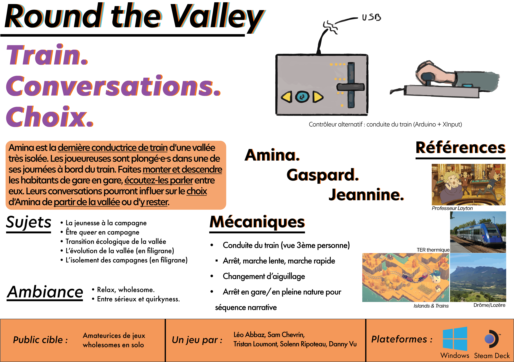
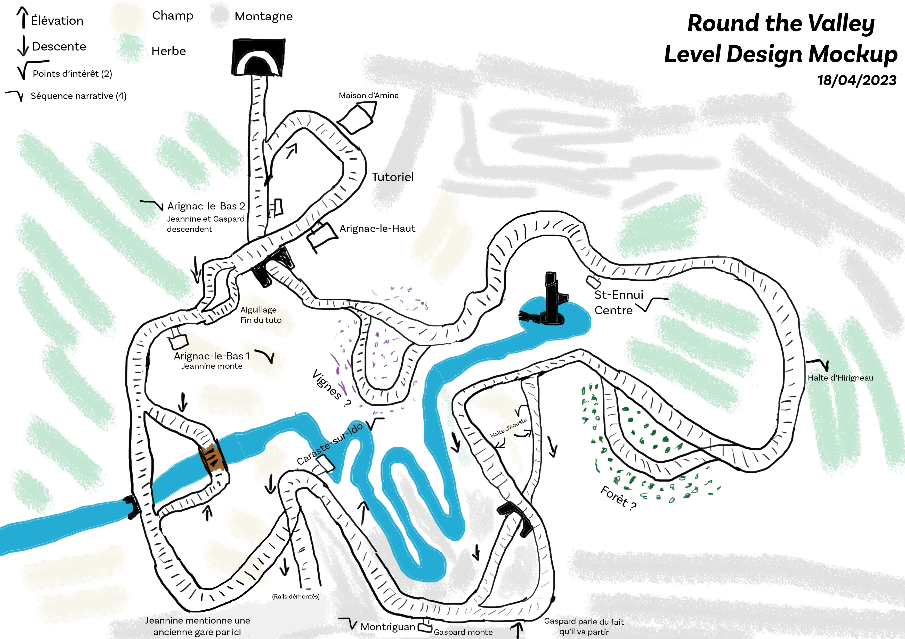

'Round the Valley
Description and project breakdown.
Description
- Team of 5
- 3 months
- Master JMIN assignment
- Unity, Git, Notion, Yarn Spinner
'Round the Valley is a train driving game, mixed with a visual novel. Through mountains and the valley, play as Amina, the last train driver of the Esbor valley, facing a personal dilemma. Maybe the passengers' conversations will help her make a choice.
Project breakdown
The pitch was built in collaboration with Solenn, the project's Game Artist. We wanted to make a game talking about living in the countryside, the place we're both coming from. We've added trains in the mix as they're cool (and part of my centers of interests). Then, other themes were added at the start of preproduction by the rest of the team, to put in 'Round the Valley a piece of each other's identity.
The addition of an alternative controller, a train lever, was necessary to us in order to provide a bigger sense of immersion during a game session. However, it is still possible to play with a keyboard or a controller, and this was the first constraint we put day one.
I was in charge of Level and Narrative Design on this project. The game design and everything about the alternative controller was made collectively.
Narrative Design
I spent the first two weeks of the project on worldbuilding, creating characters and their backstories. Jeannine and Gaspard, the two main characters, quickly appeared, but their backstories weren't that clear. First, everything superfluous or out of scope had to get cut, which turned out to be a lot. Then, their backstories needed to be more lighthearted. Discussions with the whole team and our producer making a "pacing spreadsheet" on Canva helped us nail the final version of the story.
Decisions around the narrative design involved Tristan (producer), Solenn (game artist) and myself, so that our respective domains would adhere to the message our game wants to transmit. Dialogues were written in collaboration with Tristan, using Yarn Spinner. Writing in tandem can be difficult for some, but in our case, points of friction were few and far between. We both wanted to try ourselves at writing game dialogues, and the outcome seems to resonate with a lot of players. I don't think this would have been the case if I were the only writer. The way we would work was as follows: I write the baseplate for dialogues, and Tristan would improve the wording or pacing. Working this way enabled us to showcase both writing styles melancholy and down-to-earth dialogue lines on my side, positivity and lyricism in the lauding of slow-living on Tristan's side.
Level Design
The first layout drafts were made while also in the process of doing worldbuilding, in Photoshop. Here's the latest version I could find.
This layout got revised since: a better tutorial section, a lake, train stations and crossroads removed. I clearly lack in drawing skills, so this mockup serves more to give a rough idea of what I want to do for the rest of the team.
Unity's Terrain mode enabled me to model the environment easily, but its destructive workflow was a big point of friction. It was simpler and quicker to move on with a terrain 4 times bigger than try to scale it down or start over, even if this decision was detrimental to Solenn and me in the long term when came the time to produce assets and populate the environment.
With our programmer Danny, we used the Splines system integrated with Unity 2022 to make the workflow of setting the railway on the map easier. I adjusted the character controller regarding the train's acceleration, speed and brakes. Finally, I spent time adjusting the cameras during the dialogue sequences.
Here's our project defense (timecoded):